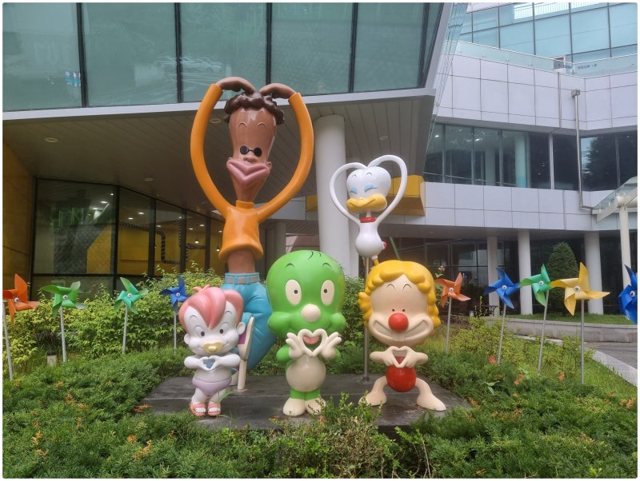

| 대표이미지 | 상호 | 설명 | 홈페이지 | 문의 및 안내 | 이용시간 | 위치 |
|---|---|---|---|---|---|---|
|  | 둘리뮤지엄 | 대한민국 최초 단일 캐릭터 박물관으로써 '아기공룡 둘리'의 다양한 에피소드를 오감으로 즐길 수 있는 복합 문화 공간이다. 1983년부터 1993년까지 10년간 월간 만화책 '보물섬'에 연재되어 대중에게 큰 관심을 받았던 '아기공룡 둘리'의 이야기를 기반으로, 빙하 타고 쌍문동에 정착하게 된 둘리를 재조명하기 위해 도봉구 쌍문동에 둘리뮤지엄이 건립되었다. 둘리뮤지엄은 출판만화, 애니메이션, 캐릭터 상품 등 다양한 매체로 선보였던 ‘아기공룡 둘리’의 의미와 가치를 조명하고, 둘리 친구들과 함께 만화 속 주인공이 되어 상상의 세계를 경험해 보는 체험형 캐릭터 박물관이다. | 홈페이지 연결! | 02-990-2200 | 10:00~18:00 | 서울특별시 도봉구 시루봉로1길 6 (쌍문동) |